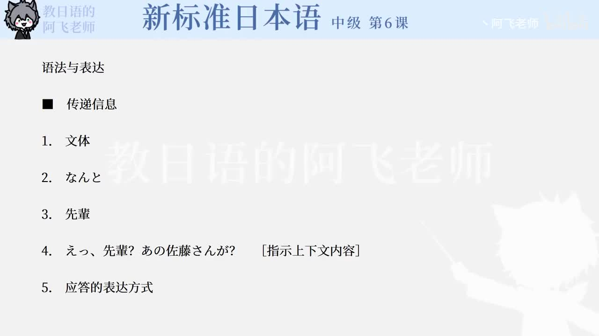

Bilibili P132 · Lesson Notes
会話「先輩」
从偶然发现大学前辈，聊到人物评价，再推测佐藤对李小姐是否在意。重点是日常口语缩约、转述和委婉推测。
这节课学什么
情境同事午休时聊天，发现客户佐藤竟然是中井的大学篮球部前辈。
沟通任务介绍人物关系、评价一个人的性格和工作表现、转述别人问过的话。
口语核心なんだけど、ちゃって、だって、かしら、かもね等自然会话表达。
人物关系
中井佐藤的大学后辈
大学篮球部
相差两届 →
相差两届 →
佐藤竜虎酒造员工
中井的前辈
中井的前辈
似乎在意 →
李开朗、工作热心
理想型上司
理想型上司
会话推进逻辑
1. 惊讶发现なんと佐藤さんは大学の先輩だった。
2. 回忆评价キャプテン・人気・まじめ・信頼。
3. 转移话题王さん加入，询问刚才聊了什么。
4. 转述提问佐藤问李是怎样的人。
5. 人物描述明るい、仕事熱心、面倒を見る。
6. 委婉推测気になるのかしら → そうかもね。
逐句精读
本课语法与口语表达
核心词汇
必须整块记忆的搭配
练习与复习
围绕本课原句训练识别、组句、回忆和输出。排序题自动忽略句末标点与空格。
来源说明：视频元数据来自 Bilibili 公开视频接口；P132 无公开字幕。本页笔记依据该视频对应的《新标准日本语》中级第6课会话「先輩」教材文本整理，并非视频逐字转录。